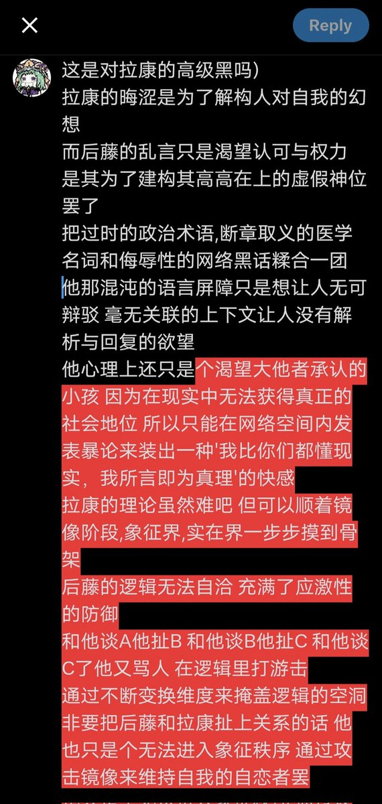

Shikieiki Yamaxanadu
@_Shikieiki
@Citrus_amara

Shikieiki Yamaxanadu
@_Shikieiki
拉康的晦涩是为了解构人对自我的幻想
而后藤的乱言只是渴望认可与权力 是其为了建构其高高在上的虚假神位罢了
把过时的政治术语,断章取义的医学名词和侮辱性的网络黑话糅合一团 他那混沌的语言屏障只是想让人无可辩驳 毫无关联的上下文让人没有解析与回复的欲望
(续)
Shikieiki Yamaxanadu
@_Shikieiki
@Citrus_amara 这里的空间写不下...我等会自己发一遍 https://t.co/Sq4MDcWz80